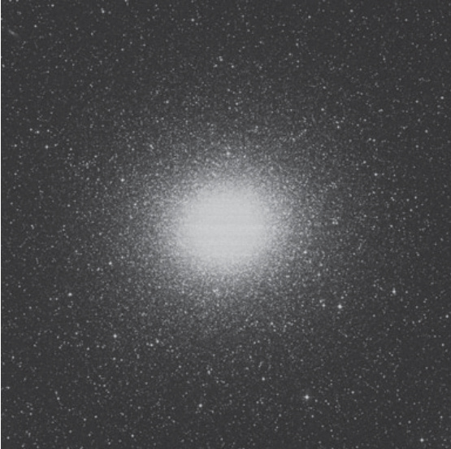

半人马座ω · Omega Centauri (NGC 5139)
"Drop a visual plumb line 36½° due south of brilliant Spica in Virgo, and you will encounter a soft and solitary light, a 4th-magnitude glow that even with a direct gaze looks slightly 'hairy,' like the fuzzy patina of a fading comet."
在室女座明亮的天门星正南方向偏移36½°画一条铅垂线，你将邂逅一团柔和而孤寂的光芒——一颗4等星的微光，即便直视也略显"毛茸茸"，犹如渐逝彗星的朦胧光晕。
关键参数 · Key Parameters
| 参数 · Parameter | 数值 · Value |
|---|---|
| 类型 · Type | 球状星团 · Globular Cluster |
| 星座 · Constellation | 半人马座 · Centaurus |
| 赤经 · Right Ascension (RA) | 13h 26.8m |
| 赤纬 · Declination (Dec) | -47° 29′ |
| 星等 · Magnitude | 3.7；3.9 (O'Meara) |
| 角直径 · Angular Diameter | 55′ |
| 表面亮度 · Surface Brightness | 12.5 |
| 距离 · Distance | ~17,300 光年 · light-years |
| 发现记录 · Discovery | 托勒密《天文学大成》(150 AD)列为恒星；哈雷1677年重新发现 |

历史渊源：从"恒星"到星团 · From "Star" to Cluster
The Alpha of globular clusters became known as Omega Centauri—a name that seems backwards unless we understand how early astronomers assigned Greek-letter designations to celestial objects. The Bavarian lawyer and astronomer Johann Bayer (1572–1625) is usually credited with the idea of attributing letters to stars, and the Greek-letter star labels used today are known as Bayer designations. However, as the late Sky & Telescope editor Joseph Ashbrook writes in his Astronomical Scrapbook, this practice was not original with Bayer at all.
球状星团中的"冠军"何以被称为"欧米茄半人马座"——这看似本末倒置的名称，实则源于早期天文学家为天体分配希腊字母的命名方式。巴伐利亚律师兼天文学家约翰·拜耳（1572–1625）通常被认为是用字母标注恒星方法的首创者，如今使用的希腊字母命名体系被称为拜耳命名法。然而，已故《天空与望远镜》杂志编辑约瑟夫·阿什布鲁克在其《天文札记》中指出，这一做法并非拜耳原创。
"The 'idea of using letters to designate stars was… not original with Bayer, but goes back to the Italian scientist Alessandro Piccolomini (1508–1578), who was Archbishop of Patras."
"用字母标注恒星的构想……并非拜耳原创，而是源自意大利科学家亚历山德罗·皮科洛米尼（1508–1578）——帕特雷大主教。"
Bayer included Omega Centauri in his Uranometria of 1603 because Ptolemy had catalogued it as a star in his Almagest of 150 AD. Ironically, there is some question as to whether Ptolemy himself made the observations that appear in the Almagest; he may have "borrowed" from Hipparchus and others to advance his theories. Jean Baptiste Delambre wrote in Histoire de L'astronomie ancienne (1817): "Did Ptolemy himself make observations?… [W]e cannot see how to decide it."
拜耳在1603年的《测天图》中收录了半人马座ω星团，只因托勒密早在公元150年的《天文学大成》中便将其编入恒星目录。颇具讽刺意味的是，托勒密是否亲自进行过《天文学大成》中的观测尚存疑问——他很可能从希帕克斯等前人处"借鉴"数据以完善其理论。让·巴蒂斯特·德朗布尔在《古代天文学史》（1817年）中写道："托勒密本人究竟是否进行过观测？……[我们]无从判定。"
Regardless of Ptolemy's methodology, Omega Centauri is bright and obvious enough that aboriginal skywatchers throughout human history must have seen its luminance, though they wouldn't have known what kind of cosmic magnificence blazed before them.
无论如何，半人马座ω星团明亮夺目，历代天文观测者必然目睹过其光芒，尽管他们或许无从知晓眼前闪耀的究竟是何等宇宙奇观。
重新发现之旅 · The Journey of Rediscovery
Omega remained a "star" until 1677, when Edmond Halley rediscovered it from St. Helena, recording it as a non-stellar object "in the horse's back." Halley later included Omega Centauri in a list of six "luminous spots or patches" published in the 1715 Philosophical Transactions of the Royal Society. His contribution, titled "An Account of several Nebulae or lucid spots like Clouds, lately discovered among the Fixed Stars by help of the Telescope," included this observation:
直到1677年，埃德蒙·哈雷从圣海伦娜岛重新发现它时，欧米茄仍被视为一颗"恒星"。哈雷将其记录为位于"马背上"的非恒星天体。后来，哈雷将半人马座ω列入1715年发表于《皇家学会哲学汇刊》的六处"发光斑点或云状物"清单中。他的论文题为《借助望远镜在恒星间新近发现的数处星云或类云亮斑报告》，其中记载：
"It is in appearance between the fourth and fifth Magnitude, and emits but a small Light for its Breadth, and is without a radiant Beam; this never rises in England."
"其视星等介于四等与五等之间，虽范围广阔却仅散发微弱光芒，且无辐射状光束；此天体在英格兰永不升起。"
Many sources credit Halley with first discerning Omega Centauri's cluster nature, but he never did so. The Swiss astronomer Philippe Loys de Cheseaux (1718–1751) included Halley's observations in his 1746 list of 21 nebulae. Of the first 14 objects, de Cheseaux wrote: "I begin with those which, viewed by telescope, are found to be simple clusters of stars." But Omega does not appear in that section—it was listed in the second part of the list, among objects that "always appear like white clouds."
许多资料将首次辨识出半人马座ω星团本质的功劳归于哈雷，但他从未有此发现。瑞士天文学家菲利普·卢瓦·德谢索（1718–1751）在其1746年编制的21个星云列表中收录了哈雷的观测数据。在前14个天体的描述中，德谢索写道："我首先介绍那些通过望远镜观测呈现为单纯恒星团的天体。"然而半人马座ω并未出现在该部分——它被列入清单的第二部分，收录那些"始终呈现为白色云状物"的天体。
观者眼中的壮丽 · A Magnificent Sight
James Dunlop, observing from the southern hemisphere, described Omega Centauri in 1827 as:
*"A beautiful large bright round nebula, about 10' or 12' diameter
🔒 受限于篇幅，本文仅展示部分样章。O'Meara 先生完整的观测手记、实测数据及未公开的独家配图，请参阅原著双语典藏版。
👉 立即在闲鱼获取《DEEP-SKY COMPANIONS》中英双语高清典藏版